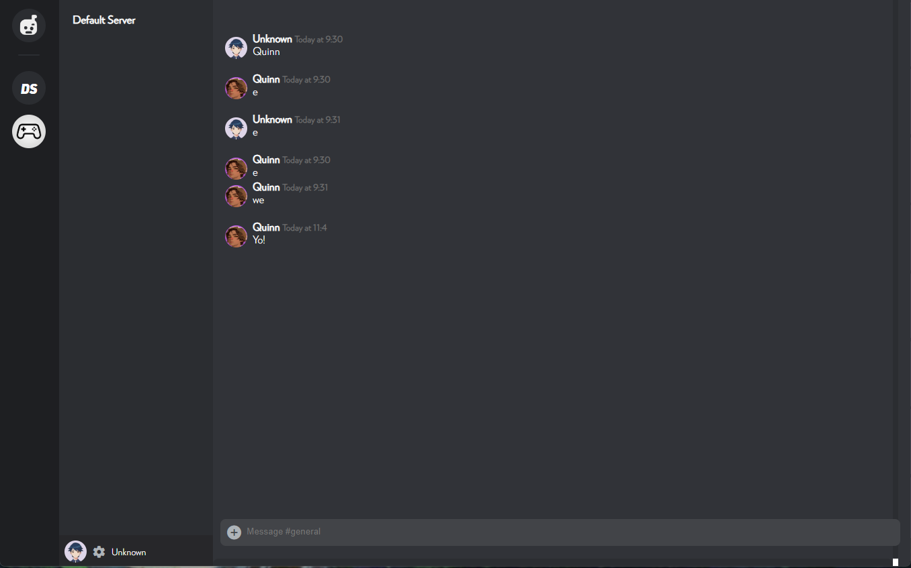
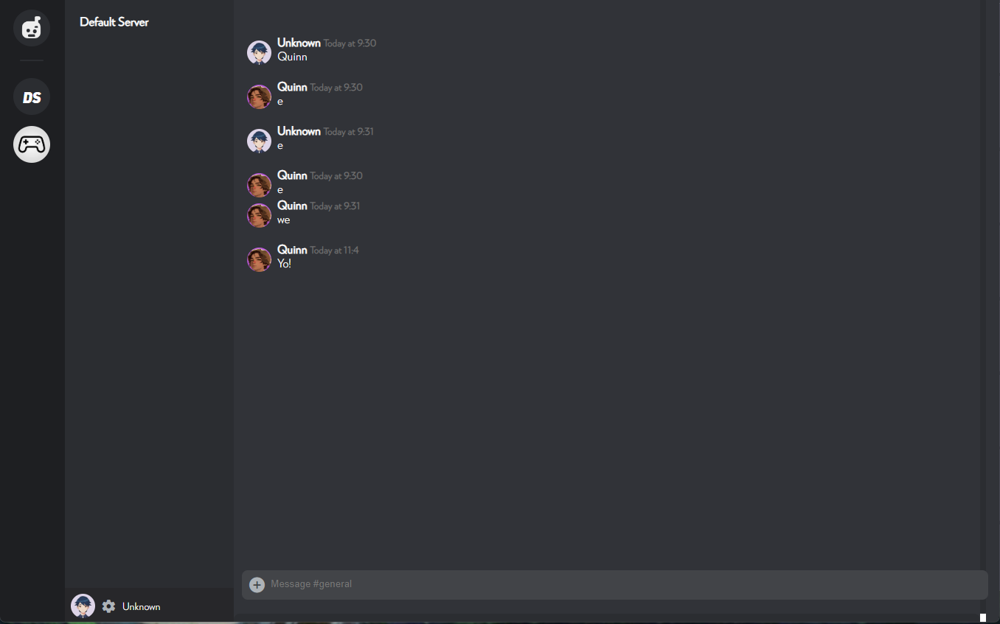

Discrod
This project that was a big step for me in my learning about node.js. It is simply a ripoff of Discord. I created it a little while after I started using node.js. It is made in socket.io and express.
 
